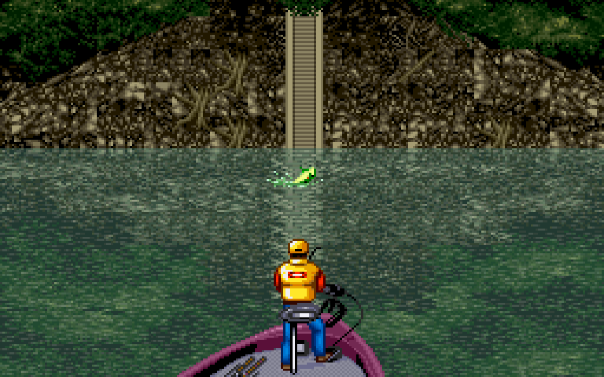

Last edited: 2021-12-26
"Just a man and a dream to catch the perfect lunker" -teleo1
Catching the big lunkers and beating Mark Davis at his own game is no easy task! There are many factors deciding the outcome of your fishing adventures. We'll go over some of the important ones here.
An important factor in reeling in the the big ones is your fishing rating, which is a based on the current fishing spot and the equipped lure/bait. The ratings change depending on what part of the tournament you're playing, so make sure to change your gear accordingly!
Let's take a look at what makes the fishing rating tick!
Lure rating
Bait rating
Fishing spot rating
Now that we have our lure/bait rating and fishing spot rating, we simply add them together to get our total fishing rating. The higher your fishing rate is, the bigger the fish!
Once you get a fish on the hook, the game will calculate the size and length based on the fishing rating.
The nitty-gritty details are available here: fish calculation!
There's a chance that the line will break while reeling in a fish. The line snapping is a 3/64 (≈4.7%) chance every time the fish jumps out of the water.
But not only that, the fish can also slip from your hand when picked up! The chance of an extra slippery fish is 1/16 (≈6.3).
Now that we know how to catch the big lunkers, we're well on our way to winning the tournament! But what about sir Mark Davis and his fellow fishermen? Let's scope out the competition!